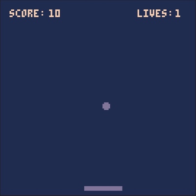
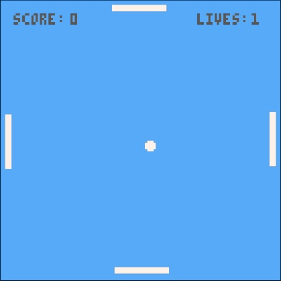
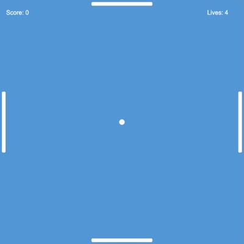

|  |
Pong (PICO-8) The traditional one-player pong. (Written in Lua) |
|
|  |
4-Pong (PICO-8) A one-player, four-paddle version of pong. My own invention. (Written in Lua) |
|
|  |
4-Pong (HTML5) A one-player, four-paddle version of pong. My own invention. (Written in JavaScript using Phaser 3) |